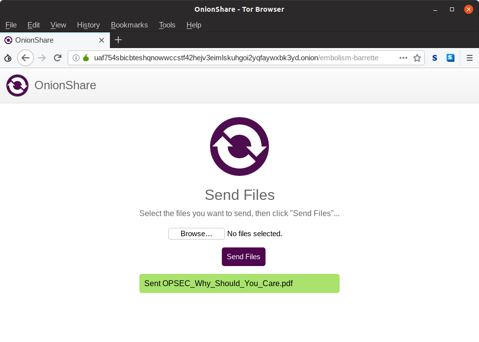

Do you want to contribute to the next major version of OnionShare?
OnionShare lets you securely and anonymously send and receive files. It works by starting a web server, making it accessible as a Tor onion service, and generating an unguessable web address so others can download files from you, or upload files to you. It does not require setting up a separate server or using a third party file-sharing service.
Over the last 10 months volunteer developers, designers, translators, and I have been hard at work on OnionShare 2.0, and it’s nearly ready. If you’d like to chip in during the month or so before the final release, try out the latest development version and report any bugs. The best way to report bugs is by opening an issue on GitHub and describing the problem, or you can send me an email at micah@micahflee.com if you don’t have a GitHub account.
And if you are a native speaker of a language other than English, we can use your help making OnionShare available in your language. If you’d like to help, check out the wiki page about translating, and go make a Weblate account to start translating the English strings into your native language. To give translators time to work we’re waiting about a month to release the final version. (OnionShare has supported multiple languages for a long time, but only in an unusable, half-assed kind of way. If you used a non-English language, only like 30% of OnionShare would appear in your language (if it was supported at all), and most was just displayed in English. The translation workflow was really bad: translators, many of whom aren’t programmers, had to submit pull requests on GitHub. It’s much better now.)
This version of OnionShare is loaded with new features. I’ll go into them all in more detail once it’s finally released, but here’s what you should know about a few of them.
Receive mode: Instead of just using OnionShare to send files to others, you can now use it as an anonymous dropbox of your own. Open OnionShare, switch to the “Receive Files” tab, and click start. After it finishes creating a Tor onion service, give the URL to other people. When they load it in Tor Browser, they’ll be able to upload files directly to your computer. (Be careful: all the same warnings about malicious email attachments apply here. Don’t open random files from strangers unless you know what you’re doing, because they could try to hack your computer.)
Support for next generation (v3) onion service: OnionShare 2.0 finally supports the new, more secure, type of Tor onion services. This was tricky to get working, and it actually involved discovering two separate bugs in upstream Tor (this and this). v3 onion services are only supported if you’re using the very latest development release of Tor. The Windows and Mac versions of OnionShare 2.0 will bundle a version of Tor that supports them. If you want to try them in this dev release you’ll need to configure OnionShare to connect to a system Tor, and install at least Tor 0.4.0.0, which Debian-like users can get from the Tor nightly-master repository.
The final version of OnionShare 2.0 will probably be released in late January or early February 2019.
